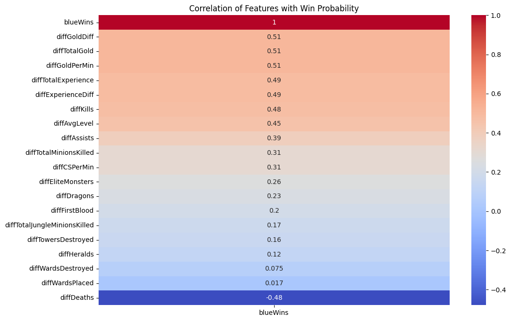
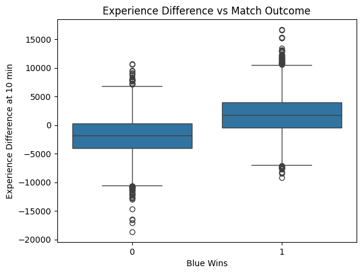
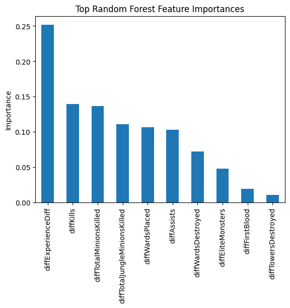
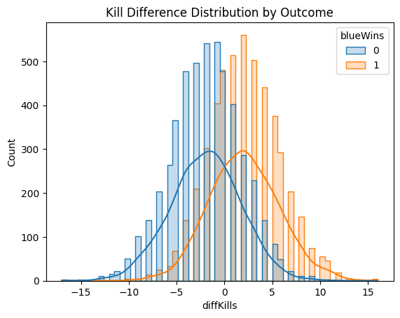

Data Mining Project 1
Introduction
This project explores the strategic aspects of competitive online gaming, focusing on the first 10 minutes of high-level League of Legends matches.
The main research question is: Which early-game features best predict a win? The goal is to identify key in-game metrics—such as gold, kills, and objective control—at the 10-minute mark that strongly affect the outcome of the game.
These insights can help professional players improve their strategies and provide valuable information for esports analytics.
Introduce the Data
The dataset used for this project is League of Legends Diamond Ranked Games (10 min). It contains roughly 10,000 high-diamond ranked matches, where both teams are of relatively equal skill level. Each row represents a game, and the dataset includes about 40 features:
- Target Variable: blueWins (binary: 1 = blue team wins, 0 = red team wins)
- Gold Metrics: total gold earned, gold difference, minions killed, jungle minions killed
- Combat Metrics: kills, assists, first blood
- Objective Metrics: towers destroyed, elite monsters killed, dragons slain, heralds taken
- Vision Metrics: wards placed, wards destroyed, vision score
To reduce redundancy, features are recorded separately for both the blue and red teams. This structure enables comparison between sides at the 10-minute mark.
Pre-processing the Data
The dataset was relatively clean, with no missing values. Pre-processing steps included:
- Load Data: Imported the CSV file into a Pandas DataFrame.
- Define Target: Selected "blueWins" as the target variable representing whether the blue team won the match.
- Feature Engineering: Created difference features by subtracting red team metrics from blue team metrics (e.g., diffTotalGold, diffKills). This reduced redundancy and made the data easier to interpret.
- Check Correlation and Multicollinearity: Computed pairwise correlations and calculated the Variance Inflation Factor (VIF) to detect multicollinearity among predictors. Highly correlated or redundant features were dropped to improve model stability.
During feature selection, I removed the direct gold-related variables from the final predictor set. The VIF analysis showed high multicollinearity between gold and other performance metrics such as kills, objectives, and minion farming.
Since gold is essentially the result of these underlying actions, including it would both inflate its statistical influence and obscure the contribution of the primary metrics.
Excluding gold ensures that feature importance findings are stable and trustworthy.
- Scale Data: Applied “StandardScaler” to normalize features. This step ensured that all predictors contribute equally and prevented large-scale variables (such as total gold) from overshadowing smaller ones (like dragons slain).
- Train-Test Split: Divided the dataset into training and testing subsets to evaluate model generalization.
These steps streamlined the dataset and ensured it was well-prepared for analysis and modeling.
Data Understanding & Visualization
Exploration focused on understanding how early-game leads translate into match outcomes. Planned visualizations include:
- Correlation Heatmap – Which features correlate most with winning.

- Boxplot of Experiences Difference vs. Win.

- Feature Importance Bar Chart from Random Forest.

- Distribution Plots comparing kill differences by outcome.

Storytelling
The results highlighted clear trends:
- Kills and Experience Differences: The strongest predictors of winning. A team ahead in gold or minions by 10 minutes significantly increases its chance of victory.
- Assists: Important but mainly because they contribute to gold and experience advantages.
- Objectives (Dragon, Herald, Towers): Less predictive in isolation at 10 minutes, but critical in shaping long-term leads.
- Vision Control: Correlated with success but weaker than combat/economic leads.
Together, these findings answer the research question: Kills and experience advantages are the clearest early signals of victory. Other metrics, while helpful, act as indirect contributors.
Impact Section
This project demonstrates the value of data analytics in competitive esports. Coaches could use such insights to refine early-game strategies, while fans and analysts could better understand how games unfold.
However, limitations include:
- Narrow Scope: Data only includes high-diamond ranked matches. Findings may not apply to lower or professional levels.
- Missing Context: No champion-specific, role-specific, or player skill data, which are highly influential.
- Ethical Concerns: Overemphasis on data-driven strategies could reduce game diversity and enjoyment.
Future work could integrate champion picks, team compositions, or player-specific stats for richer analysis.